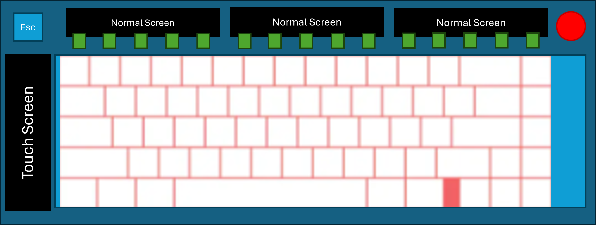
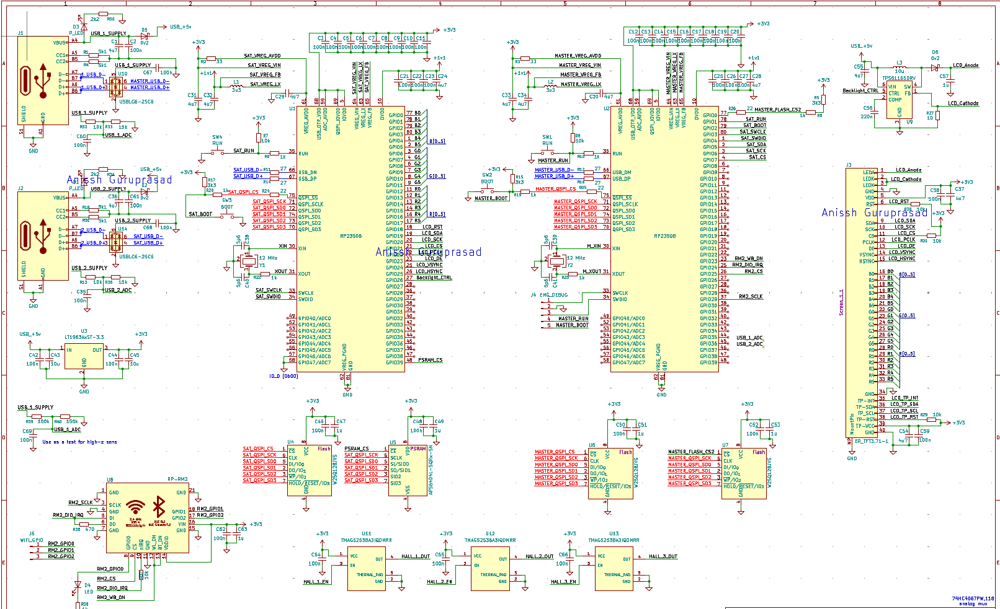

Project Inspiration
The funny origin of this project came during my search for internships. My brother suggested that I should apply to Wooting. I thought about it and decided to make my own custom keyboard as a showpiece, but with a twist. I came up with the idea of making a keyboard that would have customizable screens, replacing the function row, and one on the left side of the keyboard as a touchscreen to be used for macros and for controlling the keyboard. I thought this would be a fun project to work on, and it would also be a great way to learn more about electronics and programming.
Initial Design and Research
Designing the board was simple enough; I wanted to keep a roughly 75% layout, with the function row replaced with a screen, dedicated arrow, media, and navigation keys, and the have the left side screen be a touchscreen. The first problem was I could not find a display that would fit the size of function key row at about 1.5 inches tall and 12 inches wide. Instead, I found a 1.5 inch tall and 3 inch wide display that I could fit three groups of four keys, to match the standard layout of the function row. This brings the total number of displays to four.

In order to drive the screens themselves, I found that I would need to use massive development boards that simply wouldn't fit in the keyboard space, or utilise extremely expensive ASICs that could drive the screens. So after some research, I found that the best solution would be to use a Raspberry Pi RP2350B. This particular MCU has PIO (Programmable Input/Output) blocks that can be used to drive the high-speed RGB and timing signals required for the displays, without running on software. This would free the dual-core ARM Cortex-M0+ to handle running the display using the LVGL (Light and Versatile Graphics Library) on one core, while the other core handles input processing and communication with a the master keyboard MCU, which conveiniently, is also a RP2350B.
This master-satellite architecture would allow for the displays to be driven by a dedicated MCU, while the master MCU handles the keyboard input, communication with the computer, and directs the 4 displays via a state machine of some sort.
So where to start?
Now this is an ambitious project for me as this would be my first high-speed digital design, and I have never worked with TFT displays before, ontop of designing the necessary MCU and supporting circuitry to house the microcontrollers. So I decided to start with the displays themselves, as this is a fundemental part of the project.
In order to be able to create the firmware for the RP2350B that would drive the displays, I would need to first build a development test board that would allow me to test the PIO blocks and the master to satellite communication. I would also need to be able to test the displays themselves, and make sure that they are able to output the correct graphics with no tearing, flickering, or other artifacts.
What I have designed so far
I am currently working on designing the test board, which will be a small PCB that will house two RP2350B MCUs, and the necessary circuitry to drive the displays, a RP-RM2 module, independent USB-C per MCU, redundant serial wire debugging, and many test points to be able to probe the signals and make sure that everything is working correctly.

What's next?
The primary goal is to get this test board designed, fabricated, and assembled in the next month or so, and then start working on developing the firmware for the RP2350B MCUs to drive the displays and communicate with each other. This I anticipate will take another month or so, as I will need to learn how to actually use the PIO blocks, drive the displays, and implement a custom driver to go from the rendered framebuffer to the PIO blocks, and then to the displays themselves.